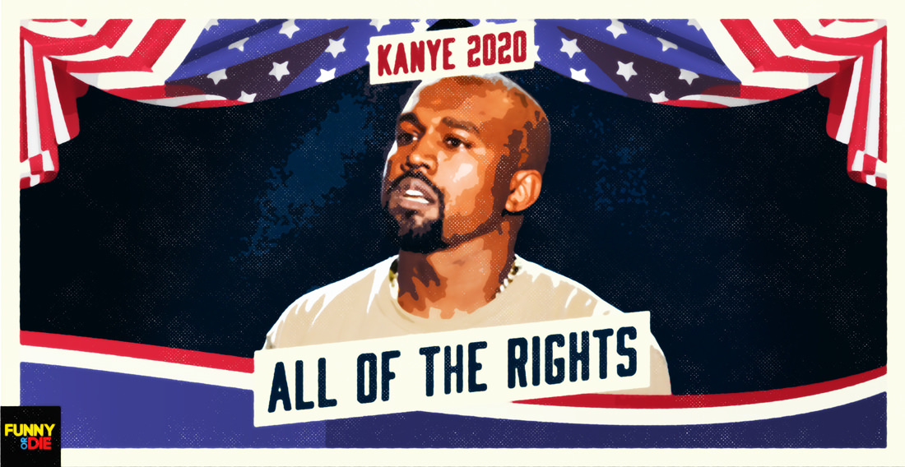

Positions
Debt
"Money doesn't make me who I am..." - Kanye west. Kanye believes in the freeing of all peoples debt no matter how big or small. He is currently $53 million in debt but that dosen't phase him. "Couldn't afford a car so she named her daughter Alexis"is unacceptable to him and he pledges his support to all Americans in need.
Nike
Kanye is a fashion god. He didn't drop a album but his shoes went platinum. Even while $53 million in business debt his influence in the industry of fashion is legend. Any person who wears Nike around him will get bunny hopped over. "Yeezy Yeezy Yeezy just jumped over jumpman".
Award shows
Two days after finally releasing his long awaited album The Life of Pablo, Kanye pledged to not attend the grammys unless promised album of the year. Kanye knows greatness when he sees it and when elected is going to go away with all award shows in favor of the Kanye awards.
